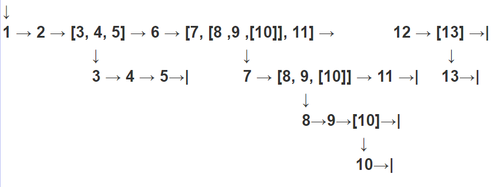

September 7th 2016 by Tom Zhou #Log
Brief summary
Today, we went through some key points in chapter 8 and chapter 9 in the first half of the lesson. These two chapters are about two data types, tuple and string, and their related operations, built-in functions and applications. You can refer to the book
How to Think Like a Computer Scientist to view the complete content. In this lesson log, I will not mentioned much about what is already there in the book.
In the second half, we proceeded further in recursive algorithm. Apart from recalling the recursive algorithm of binary search, we explored the extraction of elements in nested lists (tuples) based on recursion.
Key points in chapter 7 and 8
String:
Introduction
String is a kind of compound data type, which means it consists of smaller pieces called characters. When it comes to compound data type, we can treat it as a whole or access its components. But this does not mean that we can change every single item in string. For those data types that do not support item assignment, we say that they are
immutable.
Accessing its items:
For string, we can access its characters through this way:
a = "Hey man, what's up?"
print(a[2])
The result should be "y". The number in the square parentheses acts as the index, which is a integer. To be a good computer scientist, you should know that the index of the first character is 0.
You can actually have a negative index. That means, we count the index the other way around. For example:
a = "Hey man, what's up?"
print(a[-2])
The result is "u". Noticed that the last letter has the index of -1.
Slicing:
There is a useful way to acquire a part of a list. That is, list slicing. Here is the sample code:
a = "Hello, world!"
print(a[3:7])
"lo, " is the result. [x:y] means we get the part of the string from index x inclusive to index y exclusive, and noticed that x must be smaller than y, otherwise you will get an empty result. In the above example, index 3 is the character "l", and index 7 is the character "w", so we will get from letter "l" to the letter before "w". x and y are both optional parameter. If you skip typing one of them (or both), the default indices for x and y are the beginning and the end of the string, respectively.
Still, we can do the negative index trick. For example:
a = "Hello, world!"
print(a[-7:-3])
The result should be " wor" (there is a space prior to "wor"). It still satisfies the rule that we get a string from index x inclusive to index y exclusive, and x must be smaller than y.
Format method:
It is a very powerful tool. It helps you to construct a well-organized string with values filling in correct position. To begin with, you need to have some placeholders like {x}, where x represents the index, starting from 0. Obviously, you cannot have index 1 without having index 0.Then, you need to use .format(args) to replace your {x} with the value. The arguments are separated with commas and the position of the arguments are corresponded to the indices. The first argument replace the {0}, and the second argument replace {1}. For instance:
print("Hello, {0} and {1}!".format("Matt", "David"))
The result is "Hello, Matt and David". The position of {0} may not always come before {1}. Instead, we can have a string like "{2} * {1} * {0}". But this is not recommended because the sequence of place holders is not the same as the arguments, so it's very easy to get confused.
In addition, the format replacement field can has format specification. We can reserve space for the value in the holder and align it. For example, {0:^5} means reserve 5 spaces and align the text to the middle.
print("Ha{0:^5}aH".format("aaa"))
The result should be "Ha aaa aH". Other examples:
print("---{0:<11}---".format("Example"))
# result is "---Example ---"
print("---{0:>11}---".format("Example"))
# result is "--- Example---"
< means align to the left, while > means align to the right.
Tuple:
Introduction:
By using tuples, we can conveniently group data. A pair is a kind of tuple, yet a tuple can have unlimited amount of items. Tuples share similar characteristics with lists, except that tuple doesn't support item assignment. Operations like list slicing and accessing items can also be used in tuples. There are other unique features available, and I will only introduce some of them. You can refer to chapter 9 of the book
How to Think Like a Computer Scientist to view the complete content.
Tuple packing and unpacking
Tuple packing means assigning a tuple to a single variable. For instance:
example_tuple = ("E1", "E2", "E3")
Also, we can assign a tuple to a tuple of variables, and this assignment is equivalent to assigning variables for several times. This is called tuple unpacking.
(a, b, c) == (2, 3, 5)
Tuple unpacking can be used to swap value of two variables.
(a, b) == (b, a)
Recursion
At the end of the lesson, we recalled the recursive algorithm of binary search. You can refer to the last lesson log written by Matt An.
Why recursion not iteration? Iteration is suitable when the time of iterations is definite. But when we have no idea about the number of loops, we tend to use recursion.
The recursive algorithm aims to cut a complicated thing to its smallest components. When it reaches the smallest component, it terminates and sends the values back. So, two essential components of a successful recursion are:
- A base case, which is a terminating scenario that does not need further recursion to produce an answer
- Operations that can reduce call other cases to the base case
In recursive algorithm, you must have a point of termination. In other words, a function cannot keep calling itself endlessly. The termination scenario can be either a return value or the situation in which every line of code is executed. In my case, the functions stop calling itself after it prints the i out when i is not a tuple or a list.
When extracting elements from nested lists, we actually don't know how many items are there. Therefore, recursion is the best choice. Here is my code.
def print_all(s):
for i in s:
if type(i) == list or type(i) == tuple:
print_all(i)
else:
print(i, end=", ")
Here is the complete logic.
The function receives a list or a tuple.
It begins traversing, accessing individual items.
If the item is a list or a tuple, the function will called itself using this list or tuple as the parameter.
If the item is not a list or a tuple (which means we have reached the smallest component), the item will be printed out immediately and the function terminates.
For example, if the function received the list [1, 2, [3, 4, 5], 6, [7, [8, 9, [10]], 11], 12, [13]]
A diagram which shows the process:
↓ represents calling itself, and the parameter is the value on the top of that sign.
| represents termination.
Reading from left to right. The values in each row are the values of i after each iteration within current function.
